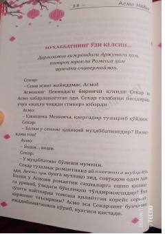

SPAsmoning Pekindagi hayoti va qalb kechinmalari haqidagi qiziqarli hikoya.
Asmo ismli qizning Pekindagi hayoti va kechinmalari haqida hikoya qiluvchi asar. Bosh qahramon o'zining shaxsiy qarashlari, do'stlari bilan munosabatlari va Xitoyga qilgan sayohati davomida duch kelgan voqealar orqali hayotiy sinovlarni boshdan kechiradi.